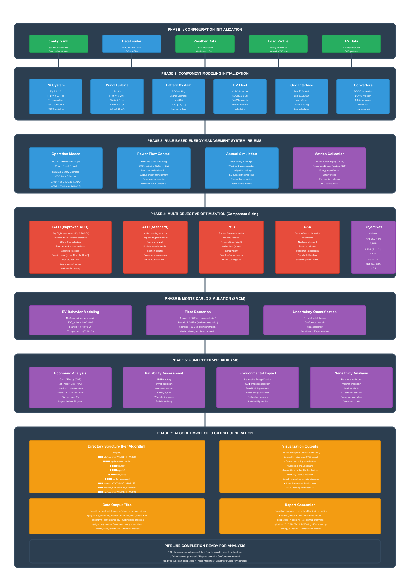
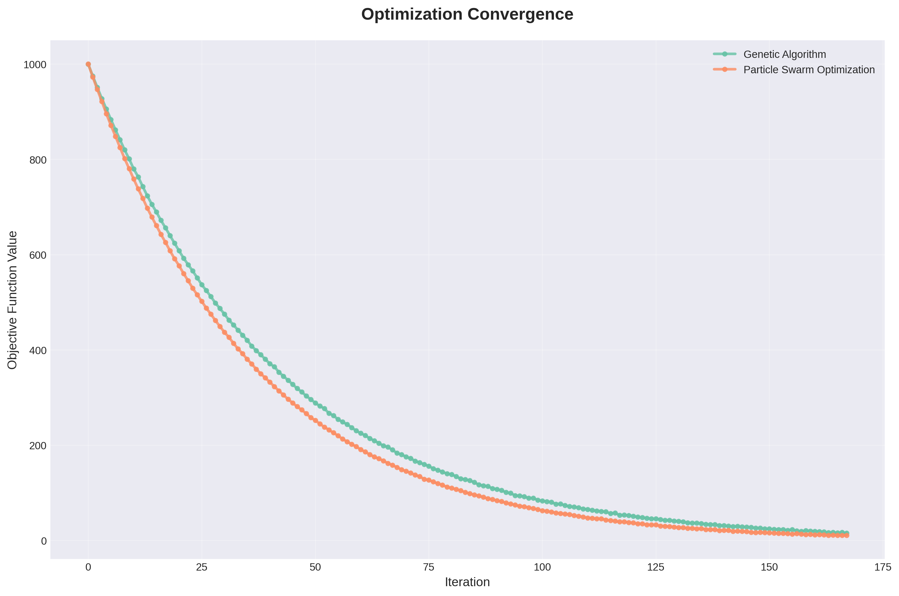
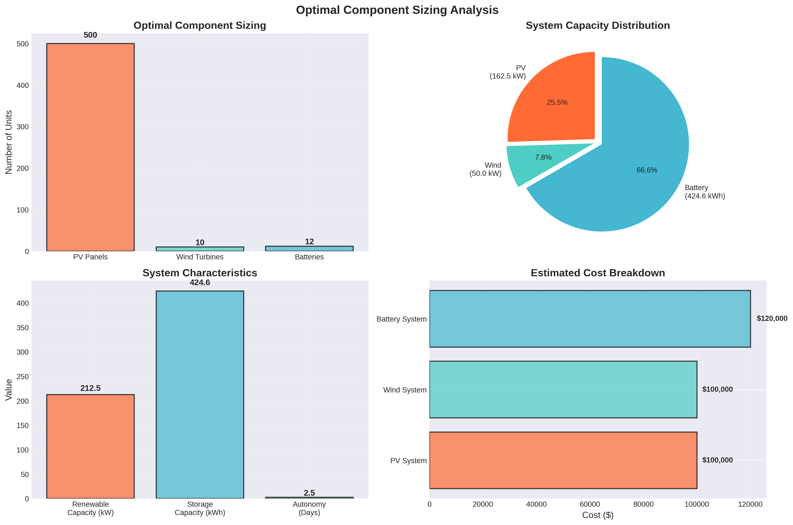

| Component | Status | Description |
|---|---|---|
| PV System | ✓ Complete | Temperature-dependent power model |
| Wind Turbine | ✓ Complete | Piecewise power curve implementation |
| Battery Storage | ✓ Complete | SOC management & efficiency modeling |
| EV Fleet (V2G) | ✓ Complete | Bidirectional charging capability |
Coordinates: 32.8872°N, 13.1913°E | Timezone: Africa/Tripoli
| Algorithm | Status | Description |
|---|---|---|
| PSO Particle Swarm Optimization |
✓ Implemented & Tested | Fully functional with convergence validation |
| CSA Cuckoo Search Algorithm |
→ Currently Implementing | Under development and integration |
| ALO Ant Lion Optimizer |
In Process | Initial implementation phase |
| IALO Improved Ant Lion Optimizer |
In Process | Enhanced version under development |

The optimization problem is defined as a weighted sum approach:
| Objective | Type | Weight | Mathematical Goal |
|---|---|---|---|
| COE Cost of Energy |
Economic | 0.4 | minimize $/kWh production cost |
| LPSP Loss of Power Supply Probability |
Reliability | 0.3 | minimize unmet demand probability |
| REF Renewable Energy Fraction |
Sustainability | 0.3 | maximize renewable contribution |
Optimization Goal: Find design parameters X* that minimize the composite objective function while satisfying all physical and operational constraints.

Thank you for your time and guidance
Abdullah Yosof
V2G Framework: Sizing Algorithms and Analysis